One college, ten departments, one system.
Recruitment work for Utah Valley University's College of Engineering and Technology: a 48 page programmes brochure, tension banner systems, and social campaigns, across the whole college.
- Role
- UX / Graphic Design Intern, CET marketing pod
- Year
- 2022
- Scope
- Brochure, tension banners, social campaigns
- Status
- Delivered
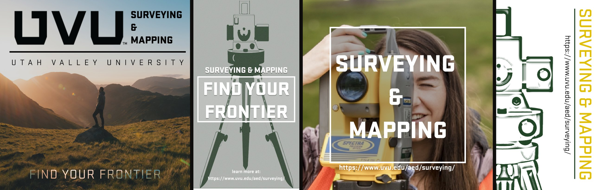
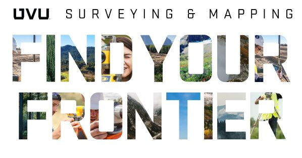
The brief
I spent a summer as the UX and graphic design intern in the marketing pod for Utah Valley University's College of Engineering and Technology. CET is ten departments, from Architecture and Engineering Design through Aviation Science, Computer Science, Culinary Arts and Engineering.
The work was recruitment across all of it: a programmes brochure for the whole college, tension banner systems for departments, and social campaigns. Three formats, ten departments, one summer, one designer.
One system, ten departments
The problem in every format is the same. Each department needs to look like itself, because a prospective culinary student and a prospective aviation student are not the same person and should not be recruited with the same picture. But everything also has to read as one college, because that is what the accreditation, the funding and the front door all belong to.
So the system is a fixed structure with a variable identity. The UVU lockup, the type hierarchy, the framing rules and the QR placement never change. What changes is the department: its colour, its photography, its programme copy, and in some cases its own mark, like the spoon and fork the Culinary Arts Institute carries.
That is what lets one person produce this much material in one summer without it falling apart. The decisions are made once, at the system level, and then each department is a fill-in rather than a fresh design.
The brochure
The largest piece was a 48 page programmes brochure covering the whole college: ten departments and around thirty degree programmes, from the Bachelor of Architecture to Digital Cinema Production. A prospective student is not going to read that linearly, so the job was making it navigable rather than making it beautiful.
The answer is colour. Every department owns a colour, set out on a single overview page near the front, and that colour then carries every page belonging to it: the tag pill, the programme header bar, the anchoring blocks. A reader who only cares about Aviation Science can flick to green and stop reading everything else.
The second device is an arch. It comes off the shape in the UVU logo lockup on the cover, opens every department in that department's colour over full bleed greyscale photography, and echoes in the rounded blocks on the programme pages. The photography is greyscale throughout for the same reason, so a construction site and a recording studio can sit two pages apart without the book falling apart.
Programme pages then run to a fixed template: department tag, programme name, body copy, one image. That was deliberate, because departments submitted wildly uneven material. Some arrived with photography and detail, some with a paragraph. A fixed template means the thin ones do not look thin.
Outcome
A single visual system holding across 48 printed pages, paid social and physical campus signage, delivered inside one summer term.
Download the full brochure (PDF, 11.3 MB).
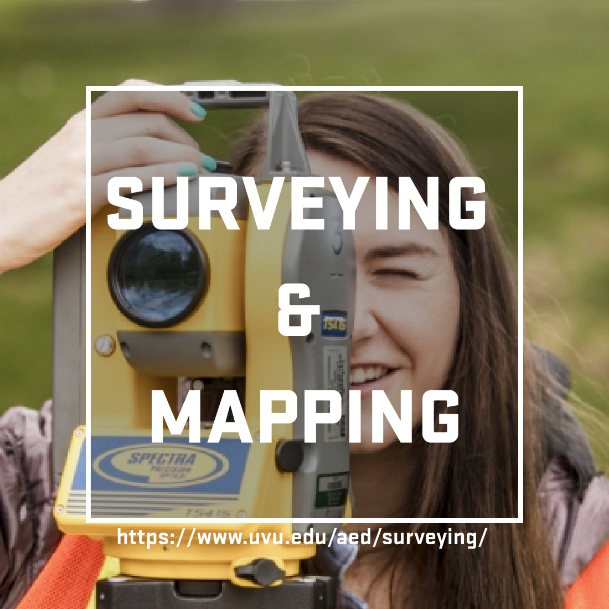
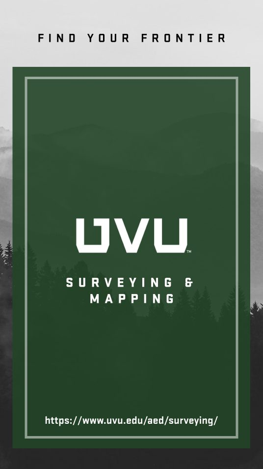
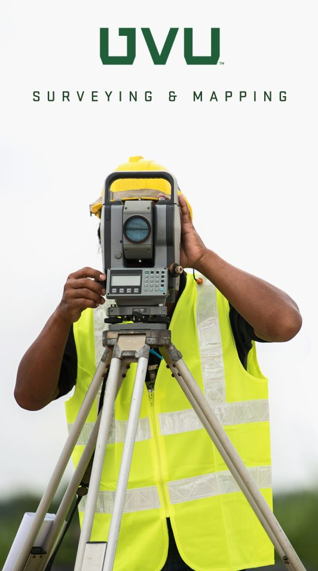
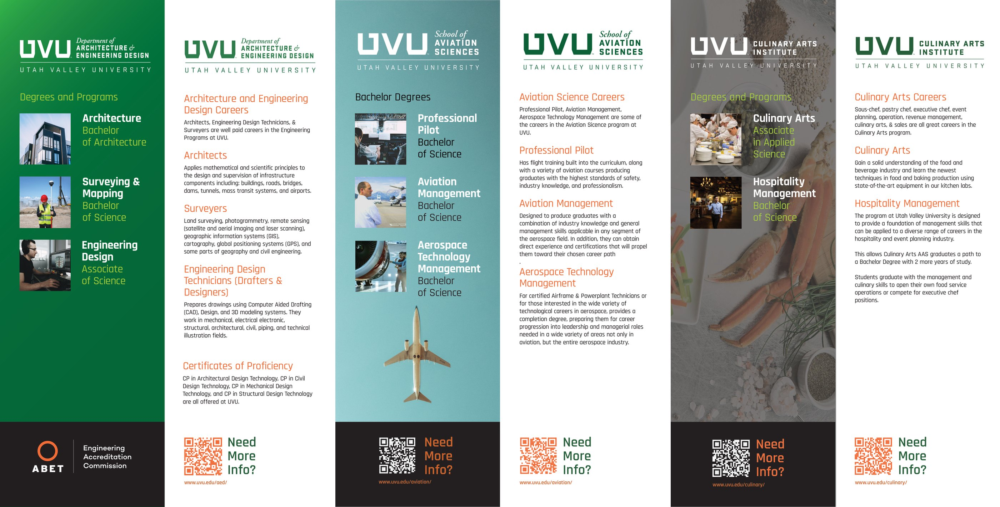
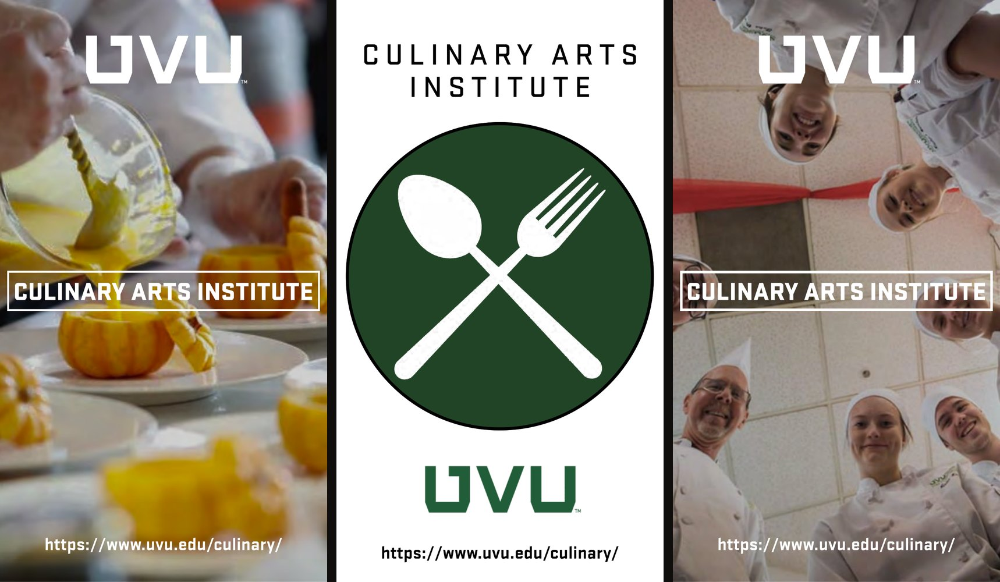
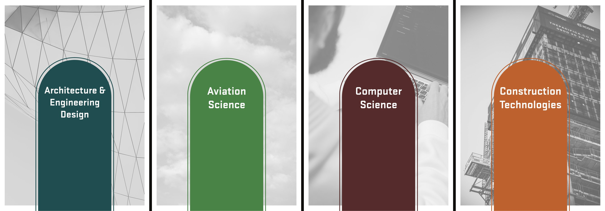
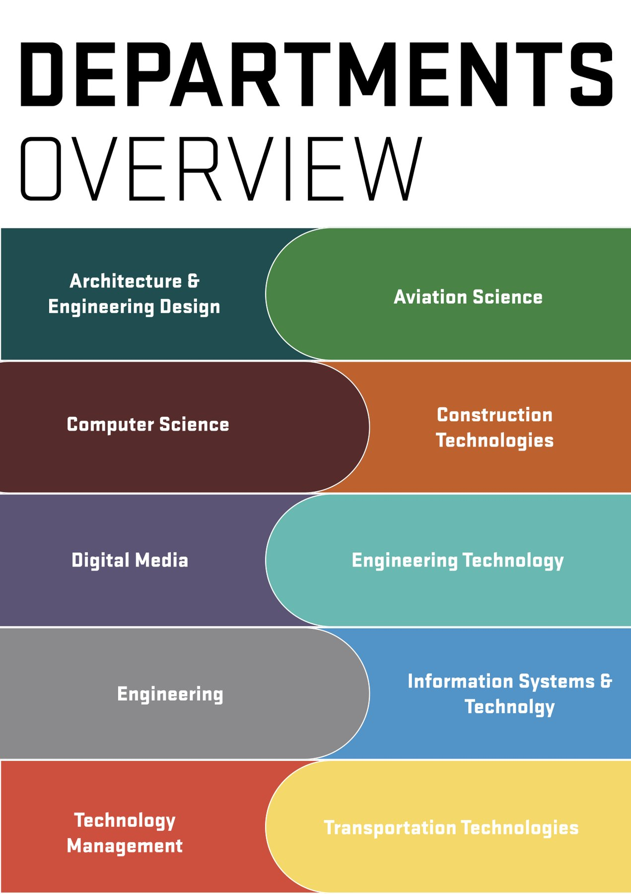
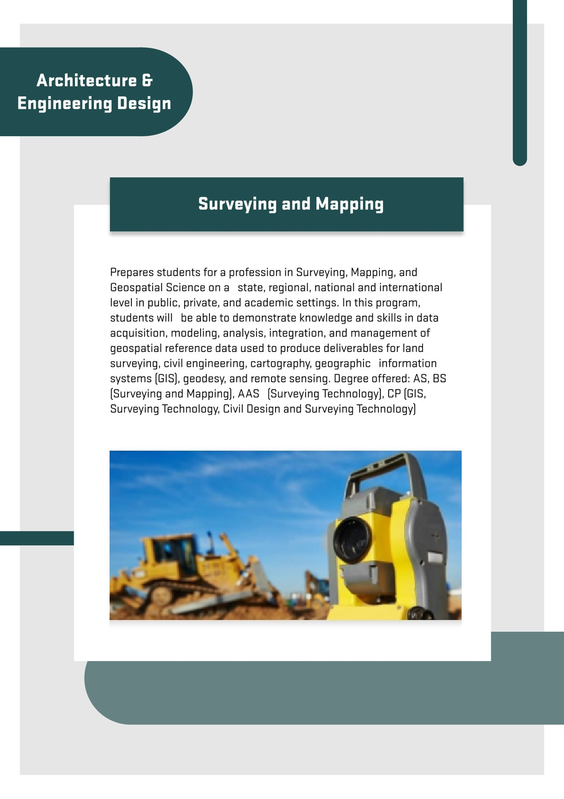
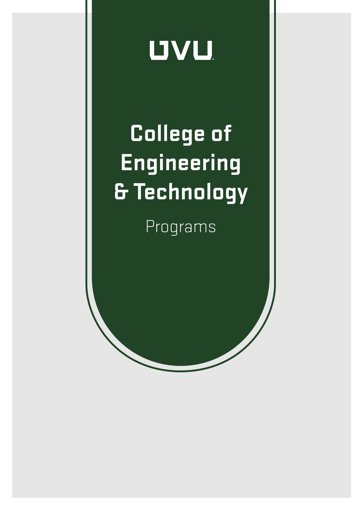